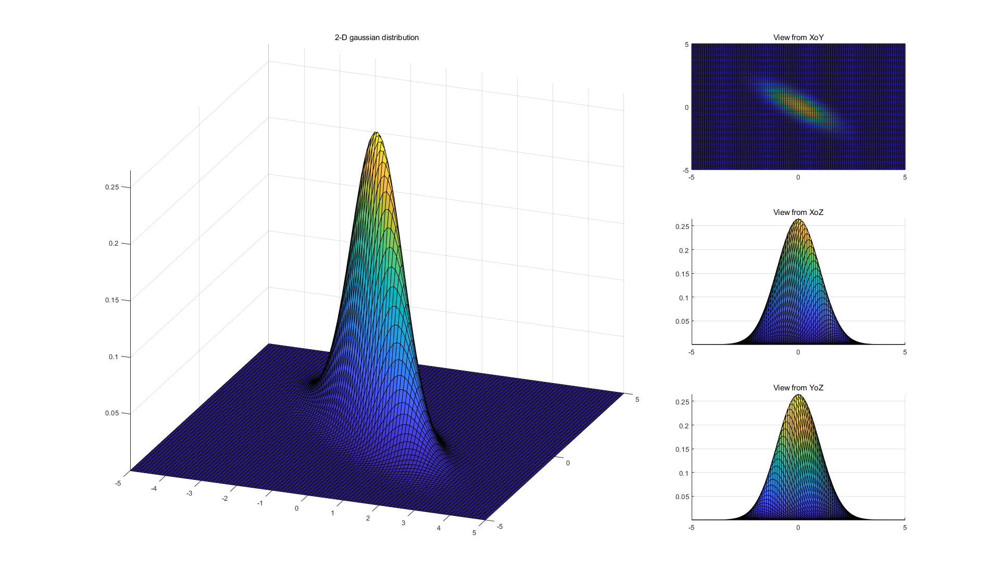

本文主要转载了关于多元高斯分布概率密度函数的推导过程，并画出了二维高斯分布的图像，以便得到更直观的理解。
在知乎上看到两篇文章，分别是多元高斯分布完全解析 文章一 , 从零开始推导多元高斯分布 文章二
文章一的流程大致为
给出一维高斯分布及其概率密度函数, X ∼ N ( μ , σ 2 ) X \sim \mathcal{N}(\mu, \sigma^2) X ∼ N ( μ , σ 2 )
对随机变量 X X X Z = X − μ σ Z=\frac{X-\mu}{\sigma} Z = σ X − μ Z Z Z Z ∼ N ( 0 , 1 ) Z \sim \mathcal{N}(0,1) Z ∼ N ( 0 , 1 )
随机变量 X X X
将一元高斯分布和多元高斯分布联系起来。如果随机向量 Z ⃗ = [ Z 1 , ⋯ , Z n ] T \vec{Z}=[Z_1,\cdots, Z_n]^T Z = [ Z 1 , ⋯ , Z n ] T 变量 Z i Z_i Z i Z ⃗ = [ Z 1 , ⋯ , Z n ] T \vec{Z}=[Z_1,\cdots, Z_n]^T Z = [ Z 1 , ⋯ , Z n ] T p ( z 1 , ⋯ , z n ) = p ( z 1 ) ⋯ p ( z n ) p(z_1,\cdots,z_n) = p(z_1)\cdots p(z_n) p ( z 1 , ⋯ , z n ) = p ( z 1 ) ⋯ p ( z n ) Z ⃗ ∼ N ( 0 ⃗ , I ) \vec{Z} \sim \mathcal{N}(\vec{0}, \boldsymbol{I}) Z ∼ N ( 0 , I )
对于普通的随机向量 X ⃗ ∼ N ( μ ⃗ , Σ ) \vec{X} \sim \mathcal{N}(\vec{\mu}, \Sigma) X ∼ N ( μ , Σ ) X i ∼ N ( μ i , σ i 2 ) ( i = 1 , ⋯ , n ) X_i \sim \mathcal{N}(\mu_i, \sigma^2_i)(i=1,\cdots,n) X i ∼ N ( μ i , σ i 2 ) ( i = 1 , ⋯ , n ) X i , X j ( i , j = 1 , ⋯ , n ) X_i,X_j(i,j=1,\cdots,n) X i , X j ( i , j = 1 , ⋯ , n ) 我们通过线性变换, 使得随机向量 X ⃗ = [ X 1 , ⋯ , X n ] T \vec{X}=[X_1,\cdots,X_n]^T X = [ X 1 , ⋯ , X n ] T
引入定理 1 ，将随机向量 X ⃗ ∼ N ( μ ⃗ , Σ ) \vec{X} \sim \mathcal{N}(\vec{\mu}, \Sigma) X ∼ N ( μ , Σ ) Z ⃗ ∼ N ( 0 ⃗ , I ) \vec{Z} \sim \mathcal{N}(\vec{0}, \boldsymbol{I}) Z ∼ N ( 0 , I ) Z ⃗ = B − 1 ( X ⃗ − μ ⃗ ) \vec{Z}=B^{-1}(\vec{X}-\vec{\mu}) Z = B − 1 ( X − μ )
文章二的流程大致为
给出一元标准高斯分布
给出均值为 μ \mu μ σ 2 \sigma^2 σ 2 z = x − μ σ z=\frac{x-\mu}{\sigma} z = σ x − μ 标准化的意义在于将数据点 x x x μ \mu μ x x x σ \sigma σ ，此时的概率密度函数为：
f ( x ) = 1 σ 2 π e − z 2 2 = 1 σ 2 π e − ( x − μ ) 2 2 σ 2 f(x)=\frac{1}{\sigma\sqrt{2\pi}}e^{-\frac{z^2}{2}}=\frac{1}{\sigma\sqrt{2\pi}}e^{-\frac{(x-\mu)^2}{2\sigma^2}}
f ( x ) = σ 2 π 1 e − 2 z 2 = σ 2 π 1 e − 2 σ 2 ( x − μ ) 2
可见，高斯分布的概率密度计算核心在于计算数据点到中心的距离，并且除以标准差将这个绝对距离转化为相对距离，然后通过距离平方的指数衰减计算概率密度。
介绍各维度不相关 的多元正态分布的概率密度函数的推导。
对各维度相关 的多元正态分布，记为随机向量 X X X U U U Y Y Y Y Y Y Y Y Y Z Z Z
从公式可以看出，Z Z Z X X X U T U^T U T D D D
总结 在文章一中，根据定理一得到 Z ⃗ = B − 1 ( X ⃗ − μ ⃗ ) \vec{Z}=B^{-1}(\vec{X}-\vec{\mu}) Z = B − 1 ( X − μ )
文章二中 Z = D U T ( X − μ X ) Z=DU^T(X-\mu_X) Z = D U T ( X − μ X ) D D D U T U^T U T
可以看出，文章一中的 B − 1 B^{-1} B − 1 D U T DU^T D U T
在文章一中，存在一个 X X X Z Z Z d z 1 ⋯ d z n = ∣ B B T ∣ − 1 2 d x i ⋯ d x n dz_1\cdots dz_n=\left|BB^T\right|^{-\frac{1}{2}}dx_i\cdots dx_n d z 1 ⋯ d z n = ∣ ∣ B B T ∣ ∣ − 2 1 d x i ⋯ d x n 雅可比行列式 ，目前还没搞懂，需要了解一下B B T = Σ BB^T=\Sigma B B T = Σ 1 ∣ Σ ∣ 1 2 \frac{1}{\left|\Sigma\right|^{\frac{1}{2}}} ∣ Σ ∣ 2 1 1
可以发现，两篇文章都是通过将随机变量 X ∼ N ( μ ⃗ , Σ ) X \sim \mathcal{N}(\vec{\mu}, \Sigma) X ∼ N ( μ , Σ ) Z ∼ N ( 0 ⃗ , I ) Z \sim \mathcal{N}(\vec{0}, \boldsymbol{I}) Z ∼ N ( 0 , I ) B − 1 B^{-1} B − 1 D D D U T U^T U T Y Y Y
在文章一中，Σ = B B T \Sigma=BB^T Σ = B B T Σ \Sigma Σ Σ = Q Λ Q T \Sigma=Q \Lambda Q^T Σ = Q Λ Q T
将 Σ = Q Λ Q T \Sigma=Q \Lambda Q^T Σ = Q Λ Q T
问：这里为什么要计算 Z ⃗ T Z ⃗ \vec{Z}^T\vec{Z} Z T Z X ⃗ \vec{X} X Z ⃗ ∼ N ( 0 ⃗ , I ) \vec{Z} \sim \mathcal{N}(\vec{0},\boldsymbol{I}) Z ∼ N ( 0 , I ) Z Z Z
其中，指数函数的指数部分就是用 Z ⃗ T Z ⃗ \vec{Z}^T\vec{Z} Z T Z Z ⃗ T Z ⃗ = ( X ⃗ − μ ⃗ ) T Σ − 1 ( X ⃗ − μ ⃗ ) \vec{Z}^T\vec{Z} = (\vec{X}-\vec{\mu})^T\Sigma^{-1}(\vec{X}-\vec{\mu}) Z T Z = ( X − μ ) T Σ − 1 ( X − μ ) p ( z 1 , ⋯ , z n ) p(z_1,\cdots,z_n) p ( z 1 , ⋯ , z n ) d z 1 ⋯ d z n = ∣ B B T ∣ − 1 2 d x i ⋯ d x n dz_1\cdots dz_n=\left|BB^T\right|^{-\frac{1}{2}}dx_i\cdots dx_n d z 1 ⋯ d z n = ∣ ∣ B B T ∣ ∣ − 2 1 d x i ⋯ d x n 雅可比行列式 ) 关系，所以要在 p ( z 1 , ⋯ , z n ) p(z_1,\cdots,z_n) p ( z 1 , ⋯ , z n ) ∣ B B T ∣ − 1 2 \left|BB^T\right|^{-\frac{1}{2}} ∣ ∣ B B T ∣ ∣ − 2 1 ∣ Σ ∣ − 1 2 \left|\Sigma\right|^{-\frac{1}{2}} ∣ Σ ∣ − 2 1
个人理解：
给出一元标准高斯分布的概率密度函数，其中 Z ∼ N ( 0 , 1 ) \mathcal{Z} \sim \mathcal{N}(0,1) Z ∼ N ( 0 , 1 )
根据标准高斯分布的概率密度函数，很容易得到内部每个随机变量 Z i Z_i Z i Z ⃗ = [ Z 1 , ⋯ , Z n ] T \vec{Z}=[Z_1,\cdots, Z_n]^T Z = [ Z 1 , ⋯ , Z n ] T
当面对普通的随机向量 X ⃗ ∼ N ( μ ⃗ , Σ ) \vec{X} \sim \mathcal{N}(\vec{\mu}, \Sigma) X ∼ N ( μ , Σ ) X i ∼ N ( μ i , σ i 2 ) ( i = 1 , ⋯ , n ) X_i \sim \mathcal{N}(\mu_i, \sigma_i^2) (i = 1, \cdots, n) X i ∼ N ( μ i , σ i 2 ) ( i = 1 , ⋯ , n ) X i , X j ( i , j = 1 , ⋯ , n ) X_i, X_j(i, j = 1, \cdots, n) X i , X j ( i , j = 1 , ⋯ , n ) X ⃗ \vec{X} X
一个很自然的想法是, 如果我们能通过线性变换, 使得随机向量 X ⃗ = [ X 1 , ⋯ , X n ] ⊤ \vec{X} = [X_1, \cdots, X_n]^\top X = [ X 1 , ⋯ , X n ] ⊤ Note : 文章一说的是通过变换使得每个随机变量彼此独立，我觉得可以更进一步，通过变换使得每个随机变量彼此独立，并服从标准正态分布。文章一也正是这么做的。
通过线性变换公式 Z ⃗ = B − 1 ( X ⃗ − μ ⃗ ) \vec{Z}=B^{-1}(\vec{X}-\vec{\mu}) Z = B − 1 ( X − μ ) Z T Z Z^TZ Z T Z X X X B B B
再通过积分的换元，得出 d z 1 ⋯ d z n dz_1\cdots dz_n d z 1 ⋯ d z n d x 1 ⋯ d x n dx_1\cdots dx_n d x 1 ⋯ d x n
接着，通过推导得到的 B B T = Σ BB^T=\Sigma B B T = Σ B B B B B B B B B X X X
二维高斯分布图像 μ = ( 0 , 0 ) , Σ = [ 1 , 1.5 ; 1.5 , 4 ] \mu=(0,0), \Sigma=[1, 1.5; 1.5, 4] μ = ( 0 , 0 ) , Σ = [ 1 , 1 . 5 ; 1 . 5 , 4 ]
μ = ( 1 , 1.5 ) , Σ = [ 3 , 0 ; 0 , 3 ] \mu=(1,1.5), \Sigma=[3, 0; 0, 3] μ = ( 1 , 1 . 5 ) , Σ = [ 3 , 0 ; 0 , 3 ]
μ = ( 0 , 0 ) , Σ = [ 1 , − 0.8 ; − 0.8 , 1 ] \mu=(0,0), \Sigma=[1, -0.8; -0.8, 1] μ = ( 0 , 0 ) , Σ = [ 1 , − 0 . 8 ; − 0 . 8 , 1 ]
